Foraging
Searching for, handling and consuming food.
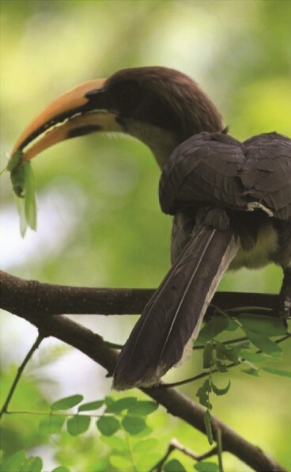
Understanding the patterns, processes, and evolutionary forces that shape how birds behave and move
WELCOME · DAY 1
Describe what the bird does.
Ask what might explain it.
Look for evidence that distinguishes explanations.
MODULE 1 · FUNDAMENTALS
Behaviour includes the observable actions and responses of birds to internal states and external conditions.
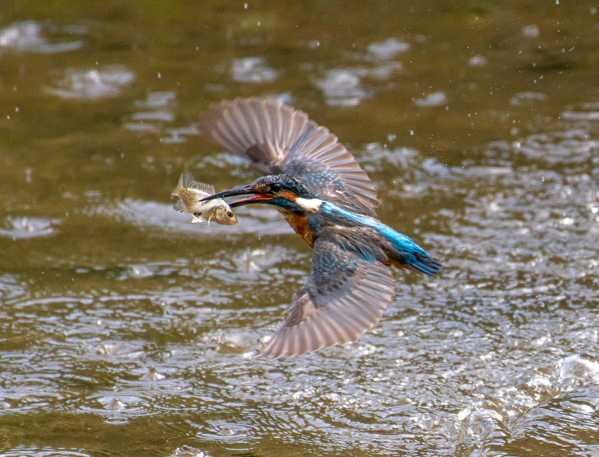
MODULE 1 · FUNDAMENTALS
Searching for, handling and consuming food.

Calls, songs, displays and other signals.
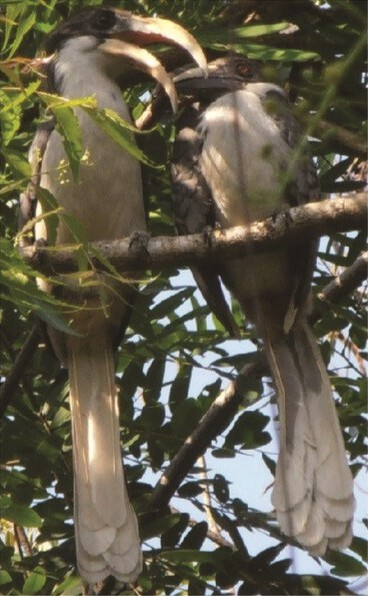
Preening, bathing and resting.
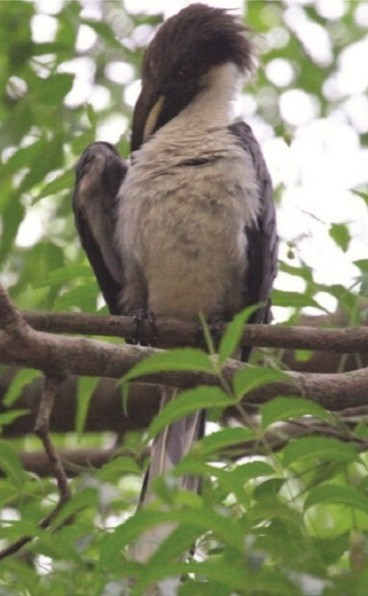
Courtship, mating and nesting.
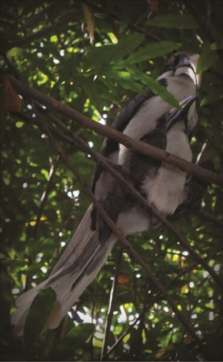
Incubation, feeding and protection.
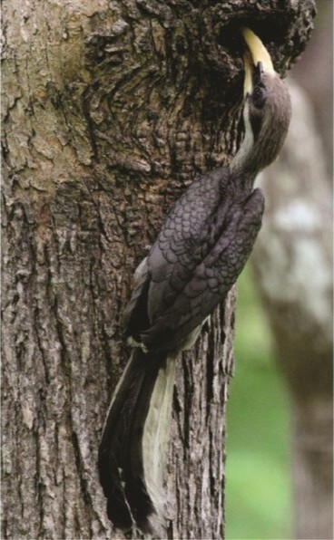
Flocking, spacing, aggression and defence.
"Sri Lanka grey hornbill shows the territorial behavior by making the aggressive calls to other birds who came across its territory"
Source: Wijerathne & Wickramasinghe, 2018
MODULE 1 · ECOLOGY
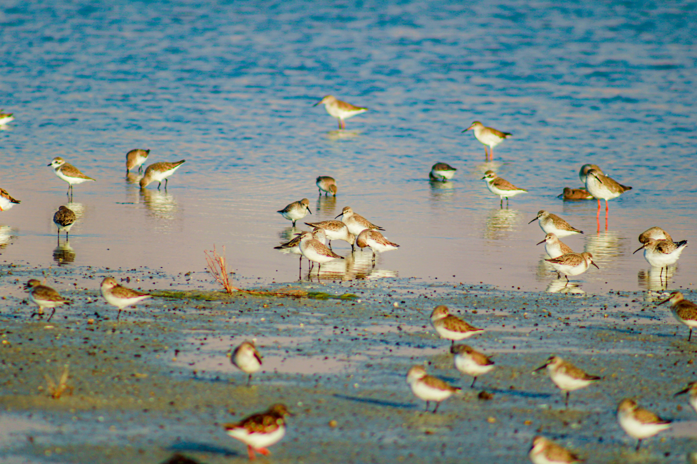
As mudflats are exposed, prey may become accessible and feeding activity may increase.
A plausible explanation is not proof of cause.MODULE 1 · ACTIVITY
A bird pecks at the ground, pauses to scan its surroundings, then flies to another spot when another bird approaches.
What did you directly observe?
What are two possible explanations?
What extra evidence could distinguish them?
MODULE 1 · CHECK-IN
Which is the best example of an observation rather than an interpretation?
Choose an answer to see feedback.
MODULE 2 · TINBERGEN
Tinbergen’s four questions help us examine different parts of a behavioural explanation.
What triggers or controls the behaviour?
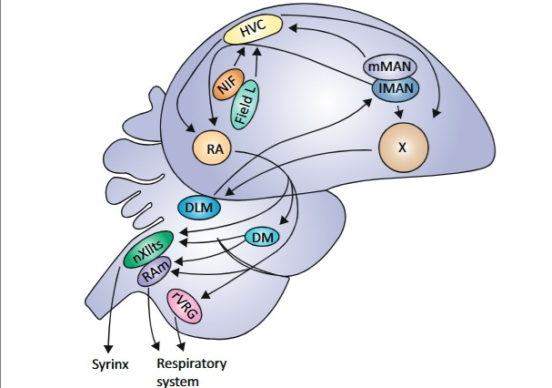
The song system, a well-mapped neural circuitry of brain nuclei and their projections within the songbird brain.
How does it develop during an individual’s life?
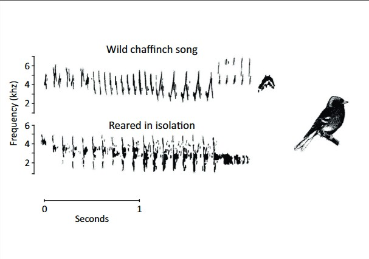
Then song is learned during a sensitive period, when birds are predisposed to learn the songs of conspecifics.
How might it affect survival or reproduction?
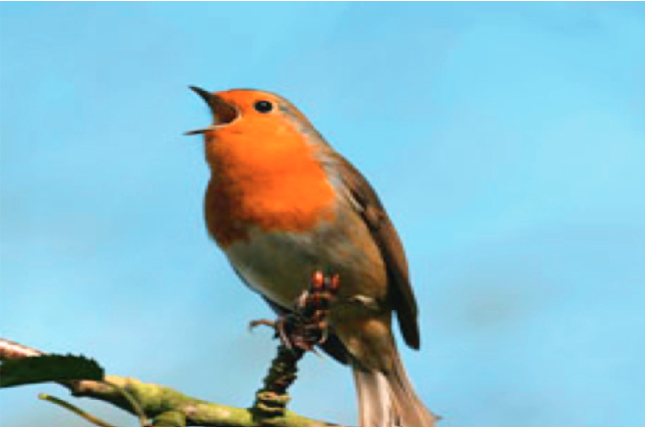
Warn off rivals and attract mates.
How has it changed across evolutionary history?
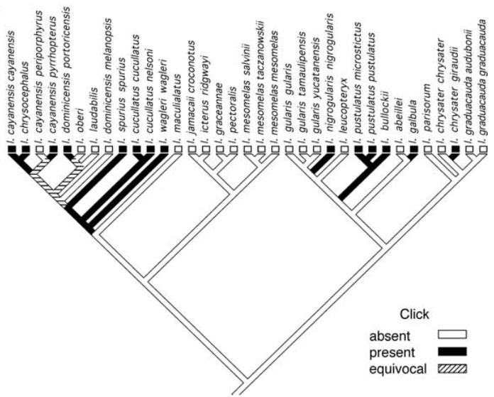
Clicks in the songs of orioles vary along phylogenetic lines.
Source: Bateson & Laland, 2013
TINBERGEN · CHECK-IN
A researcher tests whether males that sing more attract more mates. Which question is being addressed?
Choose an answer to see feedback.
MODULE 2 · QUICK CHECK
A researcher observes how juvenile birds gradually improve their ability to extract insects from tree bark as they gain experience. What is the main focus?
Choose an answer to see an explanation.
MODULE 3 · DOCUMENTING
An ethogram is a structured list of behaviours with clear, operational definitions.
Good definitions describe observable actions—not assumed emotions or motivations.
ForagingBird/s with head bent towards ground within 2cm, or carrying food item.
InvestigatingBird/s facing towards camera withink 50 cm, bird face entirely or partially obscureing field of view, or bird in flight directly towards camera.
NestingBird/s on an occupied nest or carrying nesting material.
VocalisingBird/s with inflated air sacs, or sitting upright on perch with bill open.
CopulatingBirds exhibiting mating behaviour
SunningStationary bird/s on ground with wings raised, or bird spread on ground
Source: Vaughan, Buettel & Brook, 2022
MODULE 3 · MEASUREMENT
| Measure | Examples | Record |
|---|---|---|
| Events | Calls, pecks, prey captures | Count or rate |
| States | Feeding, resting, incubation | Duration |
| Activity budget | Time in each behaviour | Proportion of time |
9 ÷ 20 × 100 = 45%. This describes time allocation; it does not explain the cause.
MODULE 3 · ACTIVITY
A bird pecks at the ground, scans its surroundings, preens and moves to another patch.
Your task: define two behaviours and decide whether each is an event, a state or either.
Feeding: pecking at or manipulating an apparent food item; count pecks or measure feeding-bout duration.
Vigilance: a defined pause in feeding with a scanning posture; measure duration if bout boundaries are clear.
ETHOGRAM · CHECK-IN
During a 20-minute observation, a bird spends 5 minutes feeding. What percentage of the observation was spent feeding?
Choose an answer to see feedback.
MODULE 4 · MIGRATION
Migration is recurring movement between areas, often seasonal, that may connect breeding and non-breeding locations.
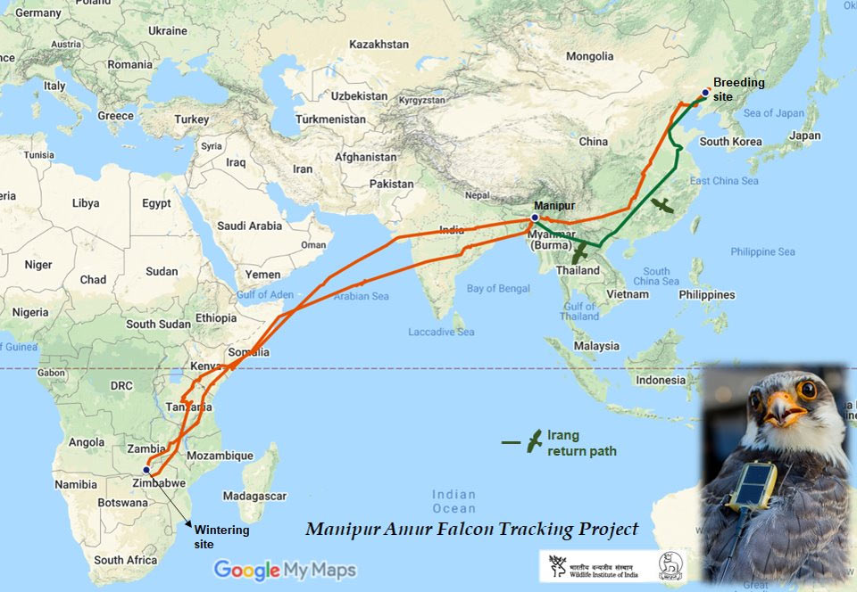
MODULE 4 · MOVEMENT TYPES
Movement away from a birthplace or previous breeding site.
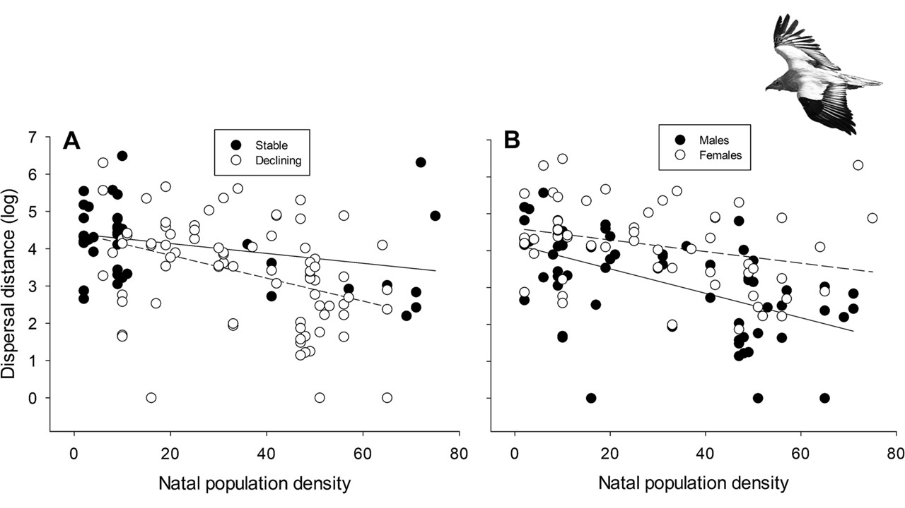
Movement that tracks changing or unpredictable resources.
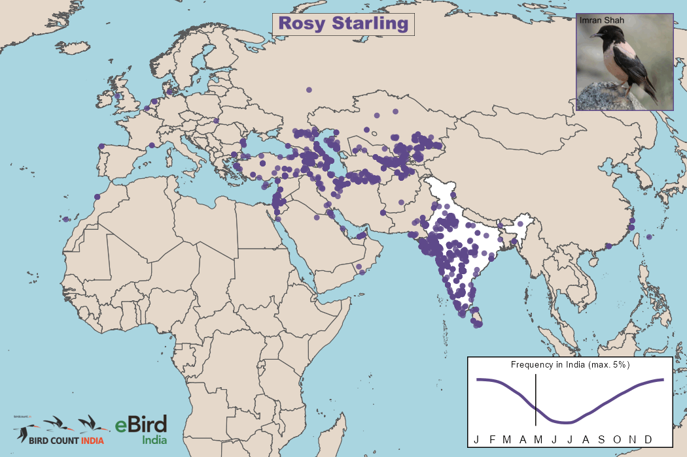
Irregular large-scale movement beyond usual patterns.
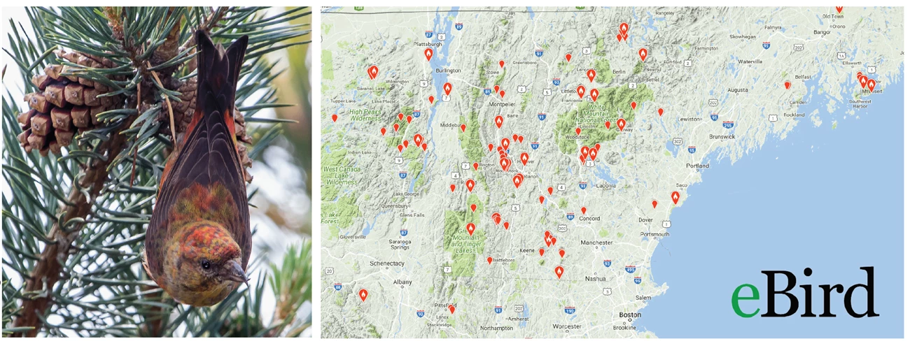
Movement between elevations.
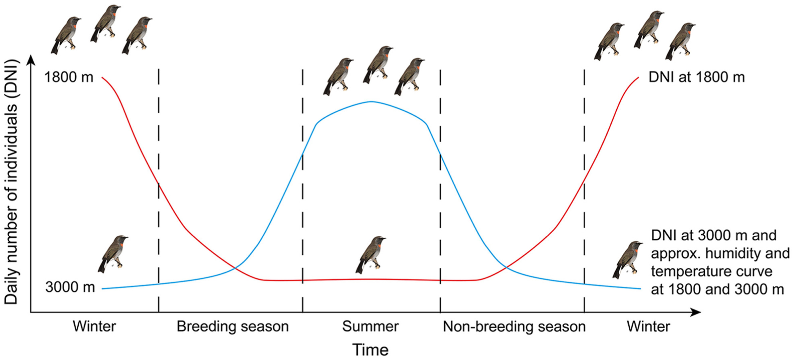
MODULE 4 · MIGRATION PATTERNS
Movement between distant seasonal ranges.
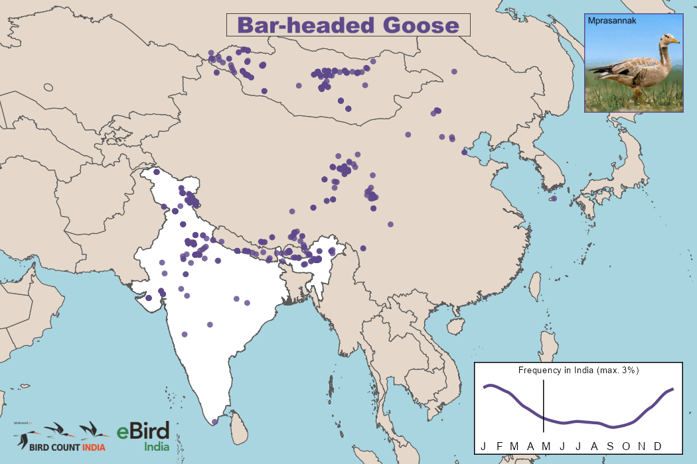
Movement over shorter distances or between elevations.
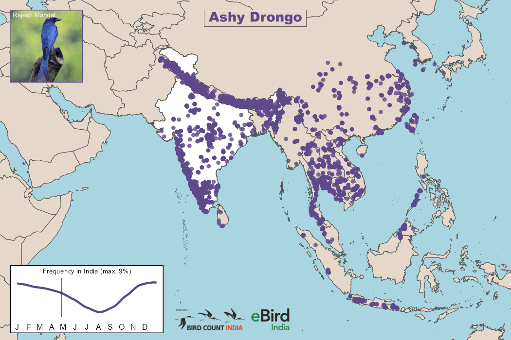
Only part of a population migrates.
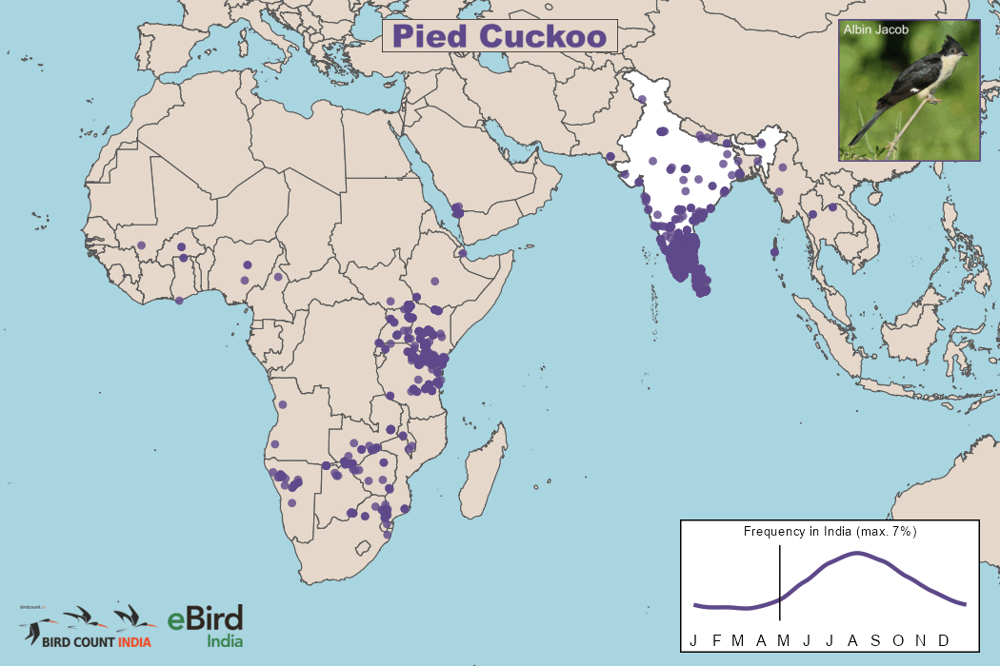
Groups differ in route, distance or non-breeding area.
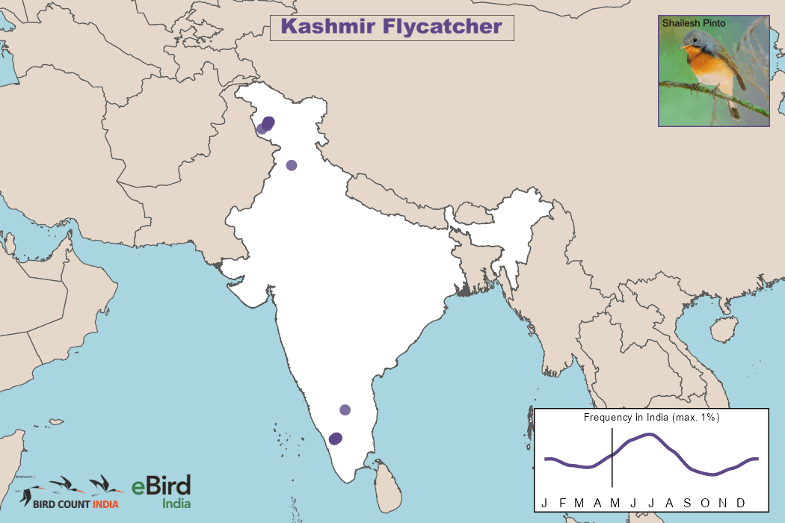
MODULE 4 · ANNUAL CYCLE
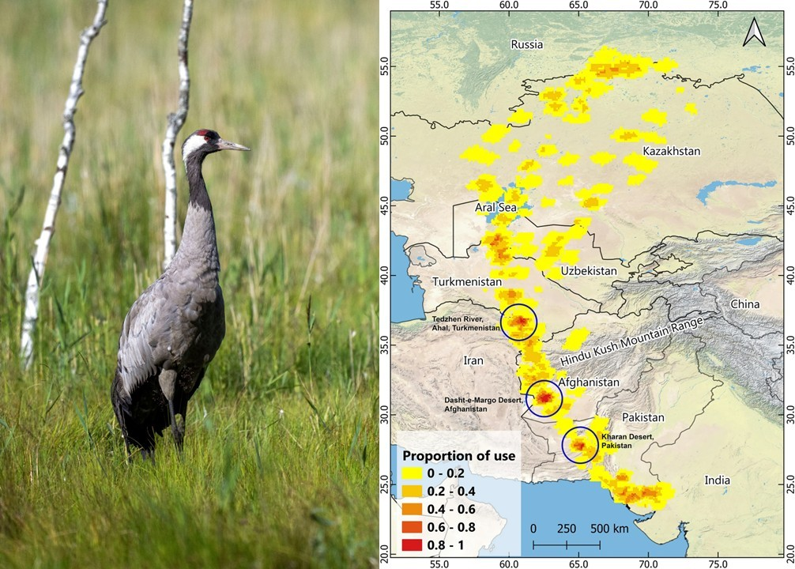
Birds may need places to rest and refuel. Conditions at one stopover can affect the rest of the journey, connecting habitats that face very different threats.
MIGRATION · CHECK-IN
A population contains both migrants and year-round residents. What is this pattern called?
Choose an answer to see feedback.
MODULE 4 · QUICK CHECK
A wetland has many more eBird records of a bird species in November than in May. What can we conclude from those records alone?
Choose an answer to see an explanation.
MODULE 5 · WHY MIGRATE?
A place that is suitable now may not remain suitable throughout the year.
MODULE 5 · ACTIVITY
Shorebirds arrive at a coastal wetland each winter after travelling long distances.
Question: What evidence would help test whether seasonal food availability influences their use of the wetland?
A large number of birds at a food-rich site is suggestive, but does not prove food caused migration.
DAY 1 · FINAL CHECK
Which evidence would best help test whether seasonal food availability influences migration timing?
Choose an answer to see feedback.
DAY 1 · TAKEAWAYS
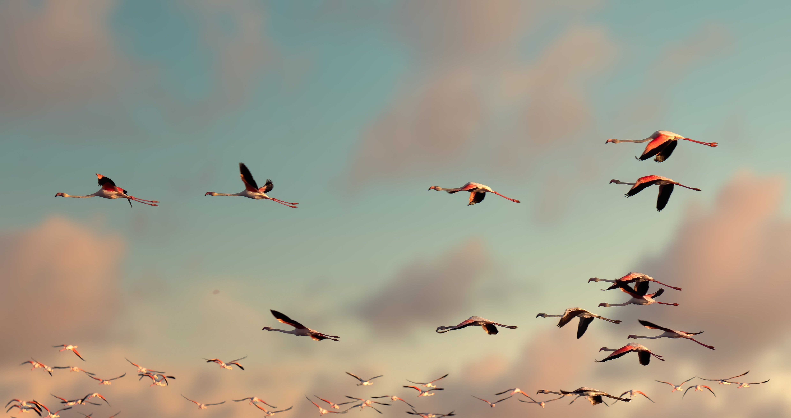
01 Separate observations from interpretations.
02 Use Tinbergen’s questions to structure explanations.
03 Define behaviours before measuring them.
04 Migration patterns vary and need evidence.
05 Benefits and costs help frame hypotheses about why birds move.